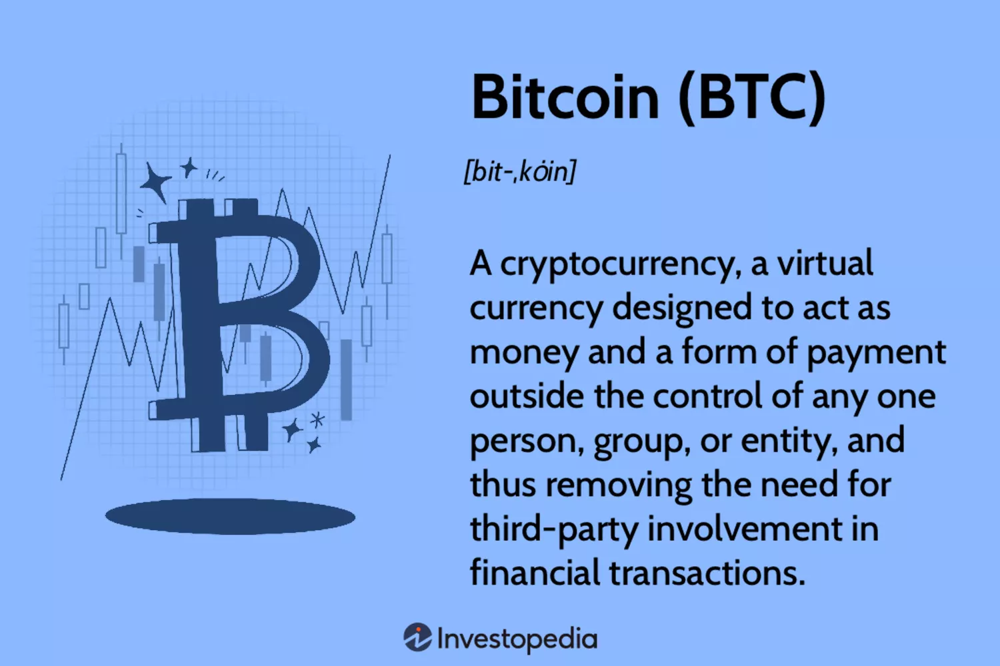

Cryptocurrency, sometimes called crypto-currency or crypto, is any form of currency that exists digitally or virtually and uses cryptography to secure transactions. Cryptocurrencies don't have a central issuing or regulating authority, instead using a decentralized system to record transactions and issue new units
Name of currency :
Bitcoin
Bitcoin (BTC) is a cryptocurrency (a virtual currency) designed to act as money and a form of payment outside the control of any one person, group, or entity. This removes the need for trusted third-party involvement (e.g., a mint or bank) in financial transactions. It is rewarded to blockchain miners who verify transactions and can be purchased on several exchanges.

Ethereum
Ethereum is a decentralized global software platform powered by blockchain technology. It is most commonly known by investors for its native cryptocurrency, ether , and by developers for its use in blockchain and decentralized finance application development.
XRP
XRP is a decentralized global software platform powered by blockchain technology. It is most commonly known by investors for its native cryptocurrency, ether , and by developers for its use in blockchain and decentralized finance application development.
BinanceCoin
BinanceCoin is a decentralized global software platform powered by blockchain technology. It is most commonly known by investors for its native cryptocurrency, ether , and by developers for its use in blockchain and decentralized finance application development.
Litecoin
Litecoin is a decentralized global software platform powered by blockchain technology. It is most commonly known by investors for its native cryptocurrency, ether , and by developers for its use in blockchain and decentralized finance application development.